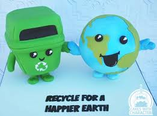
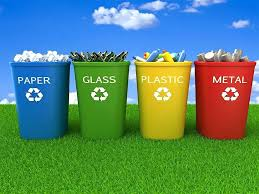
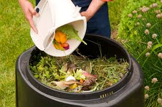
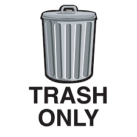

If we don't want our planet to be harmed or animals to be extinct, one of the first steps we can take is by starting to recycle and compost. By recycling, materials that would otherwise be put into landfills will be reused into other new products. By composting, you are reducing methane emissions from landfills and lowering your carbon footprint..

Reduce: Reducing means to cut down on what is used in people’s daily life. Reducing helps to save energy and raw materials. It also reduces the amount of trash in landfills and the amount of waste needing to be recycled. Reducing wasted food by composting will help lessen the amount of food that ends up in landfills.
Reuse: Reusing means to use something more than once. Reusing helps to reduce the amount of trash, to save energy, and to save money. Reusing plastic bags help to lessen the amount of plastic in the environment and in landfills. Also, using a reusable plastic bottle helps to lessen the amount of plastic bottles being made and saves money for the person using the bottle. When people litter, plastic bags can end up in the ocean causing harm to sea turtles.
Recycle: Recycling is when materials are collected, processed, and turned into new things. Recycling helps to turn products that would have gone into the trash into new things. This reduces the amount of waste in landfills. Recycling also helps to create jobs in that area.
Compost: Composting is when food scraps or other organic material is decomposed and turned into soil that can be used as fertilizer. Almost all of the food that is thrown away ends up in landfills or combustion facilities. Composting at home will reduce the amount of food that is ending up in landfills as well as provide soil full of nutrients for crops.
| Recyclable  |
Compostable  |
Trash  |
|---|---|---|
| Paper egg carton | Paper towel rolls | styrofoam agg carton |
| VHS Cassettes | Pizza crusts | pastic uniten |
| Packing Peanuts | Peanut shells | Light bulbs |
| Crayons | Toothpicks | food |
| Running Shoes | Hair from your hairbrush | coated paper products |
| Inhalers | Envelopes | candy rapers |
| Brita water filters | Leaves trimmed from houseplants | potato chip bag |
| Corks | Horse, cow or goat manure | palsic bag |
| Cosmetics Packaging | Menstrual blood | Dirty napkins |
| Mattresses | Newspapers | styrofoam |
| Prescription Drugs | 100% cotton balls | expired makeup |
| Holiday Lights | Old herbs and spices | tried super glue |